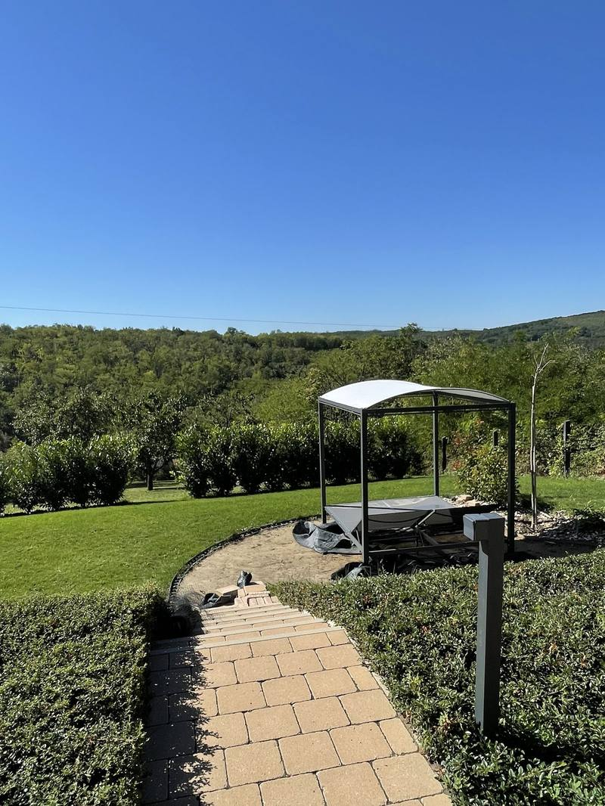

Nem látványterv. Megépített kert.
Megvalósult kertépítési és öntözőrendszer munkáink Győrből és a környékéről. Üres telkek, építkezés utáni letaposott udvarok, elhanyagolt kertek — és az, ami lett belőlük. A felvételek a saját munkáinkon készültek, a tereprendezéstől a kész gyepig, a csőfektetéstől a működő öntözésig.

Képjegyzék
A kész felszín
alatt rendszer van.
Ez az archívum nem stúdiófotókból áll. Munka közben és átadás után készült felvételek, a saját kertjeinkről — köztük olyanok is, amiken még csak föld, cső és gép látszik. Azok a fázisok döntik el, hogy két év múlva is szép lesz-e a kert.
A burkolat annyit ér, amennyit az ágyazat alatta.
Rapidkert — kivitelezésKözjáték — Munka közben
A földtől a kertig.
Alapréteg, fektetés alatt álló lépőkövek, frissen telepített sövény. A kertek nagy része így néz ki azon a héten, amit senki nem fotóz — pedig az egész ezen áll.
Képjegyzék, folytatás
Az egyetlen kép,
ahol az öntözés
és a kész kert
egyszerre látszik.
A gyepnek szórófejes zóna jut, az ágyásoknak csepegtető. Ugyanaz a vezérlő, külön program — mert a kettőnek más a vízigénye.
A jó kert úgy néz ki, mintha mindig ott lett volna.
Rapidkert — tervezésKezdjük el
A következő kert lehet a tiéd.
Kérj egy ingyenes helyszíni felmérést Győrben vagy a környéken. Megnézzük a terepet, meghallgatjuk, mit szeretnél, és megmutatjuk, mi minden hozható ki belőle — kötelezettség nélkül.